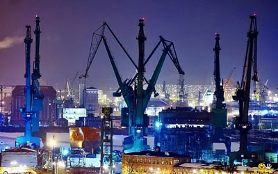
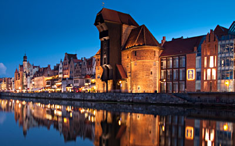
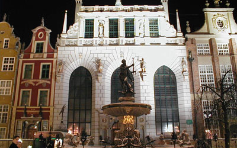
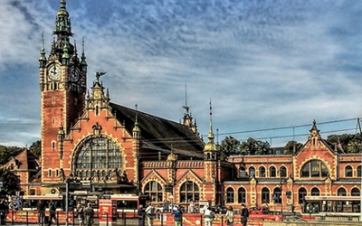
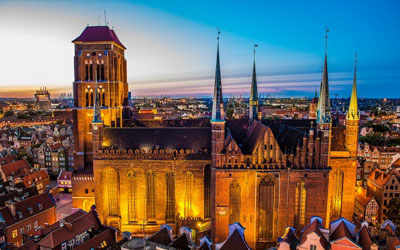
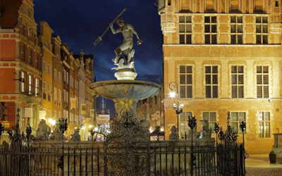

Stocznia Gdańska
Stocznia Gdańska zlokalizowana na lewym brzegu Martwej Wisły i na Ostrowiu. (od 2006 roku:
Stocznia Gdańsk SA) – jedna z największych polskich stoczni, zlokalizowana w Gdańsku na lewym brzegu Martwej
Wisły i na
Ostrowiu.

Żuraw
Żuraw - największy dźwig portowy średniowiecznej Europy, jedna z najbardziej
charakterystycznych budowli Gdańska. Położony nad Motławą, służył do przeładunku towarów i stawiania masztów
na statkach. Pełnił zarazem funkcję bramy miejskiej. Obecną formę uzyskał w latach 1442-1444.

Dwór Artusa
Dwór Artusa - przez wiele lat był jednym z najwspanialszych tego typu obiektów w Europie
północnej.Dwory Artusa powstawały licznie w całej Europie a szczególnie w miastach hanzeatyckich,
jako miejsca spotkań zamożnego patrycjatu, kupców i rzemieślników.

Gdański Dworzec
Reprezentacyjny i przestronny Dworzec Główny został wybudowany w latach 1894-1900, w stylu
tzw."gdańskiego renesansu". Projektantami kompleksu dworcowego byli Alexander Rundel, Paul Thomer i Georg
Cuny.

Bazylika Mariacka
Bazylika Mariacka zwana "koroną miasta Gdańska" - Kościół Wniebowzięcia Najświętszej Marii
Panny.
Największa ceglana, gotycka świątynia w Europie, powstawał 159 lat w kilku etapach w latach
1343-1502.

Fontanna Neptuna
Podstawowym źródłem strumieni wodnych jest trójząb trzymany przez władcę mórz i oceanów w
prawicy,
znajdujące się u jego stóp konie morskie oraz krawędź postumentu